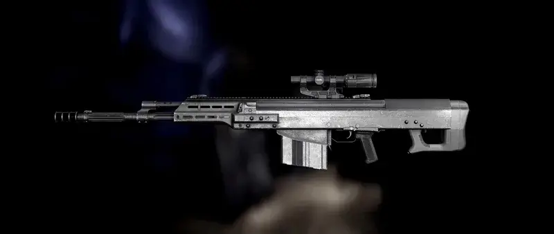

Eukyre's AK-50 backport
- Downloads
- 19,403
- Favourites
- 0
- Mod lists
- 1
This mod is simply a backport of the AK-50 from the newest THE CITY Patch that came out like 6 hours ago (at time of release in the UK.) Everything is set to the existing data that was found by scrubbing the changelogs. The only difference here is that the trader prices and Loyalty Levels are set differently to Live, as I don’t feel like adding a questline to unlock this thing. By default this weapon’s mod slots are compatible with other mods such as Epic’s AIO, TCG and ECOT.


Massive thank you to the amazing team I’m glad to now be a part of, WTT; particularly EpicRangeTime, for teaching me how to make assets and texture; Tron for the SP Smart Materials and other texture assistance; and Groovey for making the codebase that this mod runs on. Thank you, guys!
Check out the WTT Discord server here.
If you want to, you can support my work on my Ko-Fi page, found here.
Version
1.0.5
Any FIKA-Headless related issues are usually due to poor installation, I have tested with several people and confirmed this mod works flawlessly with FIKA-Headless.
- Added Stock/Handbook Preset for the AK-50 thanks to Crypluto on github.
- Added ability for this weapon to spawn in Airdrops VERY rarely (1 in every 100 raids)